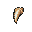
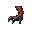
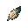

Loading progression…
WASD viser nu gå-loops i alle fire retninger. Op er en foreløbig 180° drejning af syd. Diagonal bevægelse bruger den nærmeste af de fire retninger. Se loopet i 4×. Efter to Compy-jagter får du første mutation. DNA gemmes lokalt i denne browser. Dette er en browserdemo; PNG-filerne og animationsmanifestet følger med til GDevelop-import.
Verden er sat på pause. Klik eller tryk 1, 2 eller 3.


